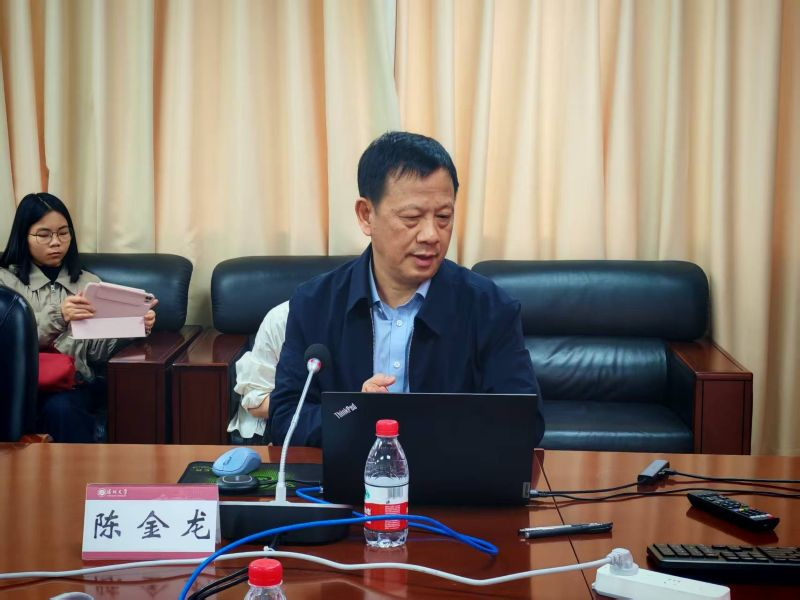
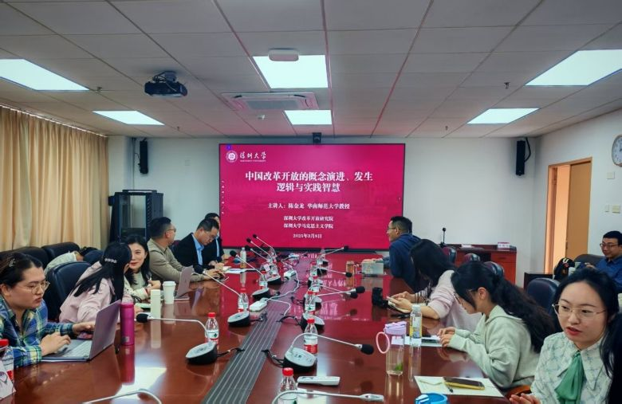
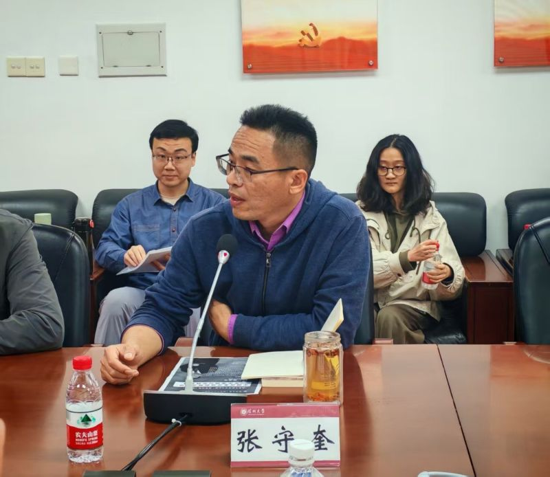

<td align="center" class="tbcolor10" colspan="2" valign="top">
<table border="0" cellpadding="0" height="100%" width="100%">
<tbody><tr><td align="right" height="35px" style="font-size:9pt">
<a href="javascript:window.close()" title="关闭本窗口">关闭窗口</a>｜<a href="print.asp?id=543325" target="_blank" title="打印本页内容">打印张贴版</a>    

</td></tr>
<tr>
<td align="center" height="500" valign="top">
<table border="0" cellpadding="4" cellspacing="0" height="100%" style="border-collapse: collapse;word-break:break-all;" width="86%">
<tbody><tr>
<td align="center" height="80px"><span style="font-family:方正小标宋简体;font-size: 25px;color: #C70E5C"><b>“改革开放理论与实践”名家讲堂第一期：“中国改革开放的概念演进、发生逻辑与实践智慧”学术讲座在改革开放研究院、马克思主义学院顺利举办</b></span></td>
</tr>
<tr>
<td align="center" height="50px" style="font-size: 9pt"><font color="#808080">马克思主义学院　2025/3/19 15:33:00</font><br/> 
<font color="#F8F8F8" style="font-size:9pt">（钟沛基 2022280095）</font></td>
</tr>
<tr>
<td height="300" valign="top">
<p class="MsoNormal" style="text-indent:30.0pt;mso-char-indent-count:2.0;
line-height:28.0pt;mso-line-height-rule:exactly"><span lang="EN-US" style='font-size:15.0pt;font-family:"Times New Roman",serif;mso-fareast-font-family:
仿宋'>2025</span><span style='font-size:15.0pt;font-family:仿宋;mso-ascii-font-family:
"Times New Roman";mso-bidi-font-family:"Times New Roman"'>年</span><span lang="EN-US" style='font-size:15.0pt;font-family:"Times New Roman",serif;
mso-fareast-font-family:仿宋'>3</span><span style='font-size:15.0pt;font-family:
仿宋;mso-ascii-font-family:"Times New Roman";mso-bidi-font-family:"Times New Roman"'>月</span><span lang="EN-US" style='font-size:15.0pt;font-family:"Times New Roman",serif;
mso-fareast-font-family:仿宋'>8</span><span style='font-size:15.0pt;font-family:
仿宋;mso-ascii-font-family:"Times New Roman";mso-bidi-font-family:"Times New Roman"'>日下午，由改革开放研究院、马克思主义学院联合主办的“改革开放理论与实践”名家讲堂第一期在深圳大学汇文楼</span><span lang="EN-US" style='font-size:15.0pt;font-family:"Times New Roman",serif;
mso-fareast-font-family:仿宋;mso-hansi-font-family:仿宋'>1600</span><span style='font-size:15.0pt;font-family:仿宋;mso-ascii-font-family:"Times New Roman";
mso-bidi-font-family:"Times New Roman"'>会议室顺利举行。华南师范大学学术委员会主任、教育部“</span><a name="_5skiwx940"><span lang="EN-US" style='font-size:15.0pt;font-family:"Times New Roman",serif;
mso-fareast-font-family:仿宋;mso-hansi-font-family:仿宋'>CJ</span></a><span style="mso-bookmark:_5skiwx940"><span style='font-size:15.0pt;font-family:仿宋;
mso-ascii-font-family:"Times New Roman";mso-bidi-font-family:"Times New Roman"'>学者</span></span><span style='font-size:15.0pt;font-family:仿宋;mso-ascii-font-family:"Times New Roman";
mso-bidi-font-family:"Times New Roman"'>”特聘教授陈金龙教授</span><span style="font-size:15.0pt;font-family:仿宋;mso-bidi-font-family:仿宋">为深大师生带来了一场题为“中国改革开放的概念演进、发生逻辑与实践智慧”的精彩讲座。本次讲座由深圳大学马克思主义学院副院长张守奎教授主持，众多师生到场聆听。</span><span lang="EN-US" style='font-size:15.0pt;font-family:"Times New Roman",serif;
mso-fareast-font-family:仿宋;mso-hansi-font-family:仿宋'><o:p></o:p></span></p>
<p class="MsoNormal" style="mso-pagination:widow-orphan"><span lang="EN-US" style="font-size:12.0pt;font-family:宋体;mso-bidi-font-family:宋体;color:#202020;
mso-font-kerning:0pt;mso-no-proof:yes"><v:shapetype coordsize="21600,21600" filled="f" id="_x0000_t75" o:preferrelative="t" o:spt="75" path="m@4@5l@4@11@9@11@9@5xe" stroked="f">
<v:stroke joinstyle="miter">
<v:formulas>
<v:f eqn="if lineDrawn pixelLineWidth 0">
<v:f eqn="sum @0 1 0">
<v:f eqn="sum 0 0 @1">
<v:f eqn="prod @2 1 2">
<v:f eqn="prod @3 21600 pixelWidth">
<v:f eqn="prod @3 21600 pixelHeight">
<v:f eqn="sum @0 0 1">
<v:f eqn="prod @6 1 2">
<v:f eqn="prod @7 21600 pixelWidth">
<v:f eqn="sum @8 21600 0">
<v:f eqn="prod @7 21600 pixelHeight">
<v:f eqn="sum @10 21600 0">
</v:f></v:f></v:f></v:f></v:f></v:f></v:f></v:f></v:f></v:f></v:f></v:f></v:formulas>
<v:path gradientshapeok="t" o:connecttype="rect" o:extrusionok="f">
<o:lock aspectratio="t" v:ext="edit">
</o:lock></v:path></v:stroke></v:shapetype><v:shape id="图片_x0020_1" o:spid="_x0000_i1027" style="width:361.8pt;height:312pt;visibility:visible;mso-wrap-style:square" type="#_x0000_t75">
<v:imagedata cropleft="5018f" cropright="3330f" o:title="" src="file:///C:/Users/26463/AppData/Local/Temp/msohtmlclip1/01/clip_image001.jpg">
</v:imagedata></v:shape></span><span lang="EN-US" style="font-size:12.0pt;font-family:宋体;
mso-bidi-font-family:宋体;color:#202020;mso-font-kerning:0pt"><o:p></o:p></span></p>
<p class="MsoNormal" style="text-align: center; text-indent: 24pt;"><span lang="EN-US" style="font-size:12.0pt;
font-family:宋体;mso-bidi-font-family:宋体;color:#202020;mso-font-kerning:0pt"><o:p> </o:p></span></p>
<p class="MsoNormal" style="text-indent:30.0pt;mso-char-indent-count:2.0;
line-height:28.0pt;mso-line-height-rule:exactly"><span style="font-size:15.0pt;
font-family:仿宋;mso-bidi-font-family:仿宋">在讲座中，陈金龙教授从改革到进一步全面深化改革的概念演化、改革开放的发生逻辑和改革开放的中国智慧三个方面展开讲述，以整体宏观的视角脉络清晰地分析了改革开放的历史纵横。<span lang="EN-US"><o:p></o:p></span></span></p>
<p align="center" class="MsoNormal" style="text-align:center"></p>
<p align="center" class="MsoNormal" style="text-align:center"><span lang="EN-US" style="font-size:12.0pt;font-family:宋体;mso-bidi-font-family:宋体;color:#202020;
mso-font-kerning:0pt;mso-no-proof:yes"><v:shape id="图片_x0020_2" o:spid="_x0000_i1026" style="width:415.2pt;height:270pt;visibility:visible;
 mso-wrap-style:square" type="#_x0000_t75">
<v:imagedata o:title="" src="file:///C:/Users/26463/AppData/Local/Temp/msohtmlclip1/01/clip_image002.jpg">
</v:imagedata></v:shape></span><span lang="EN-US" style="font-size:12.0pt;font-family:宋体;
mso-bidi-font-family:宋体;color:#202020;mso-font-kerning:0pt"><o:p></o:p></span></p>
<p class="MsoNormal" style="text-indent:30.0pt;mso-char-indent-count:2.0;
line-height:28.0pt;mso-line-height-rule:exactly"><span style="font-size:15.0pt;
font-family:仿宋;mso-bidi-font-family:仿宋">在讲座的开始，陈金龙教授将从“改革”到“进一步全面深化改革”的概念演化划分为五个发展阶段，梳理了各个时期党中央文件中关于改革开放表述的变化与发展，并分析了各个阶段不同表述所对应的阐述维度。第一阶段强调以经济体制为重点的改革和全面改革，主要是从实现四个现代化的维度诠释改革的必要性、从彰显社会主义制度优越性的维度诠释改革的必要性和从对外开放的维度诠释改革的必要性。第二阶段强调以构建市场经济体制为重点的全面改革和深化改革，这一变化源于当时建立社会主义市场经济体制的内在要求、改革成就和经验的积累和社会发展内在规律的要求。党中央认识到，现代化是整体性的社会变革，涉及各领域、各方面，即推进中国式现代化必然对全面改革和深化改革提出要求。第三阶段强调以实现科学发展为指向的全面改革和深化改革，这一时期进一步充分肯定了改革开放的地位，指出全面改革、深化改革是全面落实科学发展观、构建社会主义和谐社会的内在需要。第四阶段强调以推进国家治理体系和治理能力现代化为目标的全面深化改革，主要是从国家治理体系和治理能力现代化、彰显中国特色社会主义制度优越性、经济社会发展存在的问题和社会基本矛盾运动的维度诠释全面深化改革，第五阶段强调以推进中国式现代化为着力点的进一步全面深化改革，这一发展是源于推进中国式现代化、完善和发展中国特色社会主义制度从而推进国家治理体系和治理能力现代化、解决社会矛盾和发展新质生产力的内在需要。<span lang="EN-US"><o:p></o:p></span></span></p>
<p class="MsoNormal" style="text-indent:30.0pt;mso-char-indent-count:2.0;
line-height:28.0pt;mso-line-height-rule:exactly"><span style="font-size:15.0pt;
font-family:仿宋;mso-bidi-font-family:仿宋">随后，陈教授分析了改革开放的发生逻辑。他指出，首先，改革开放的基础是新中国较为完整的国民经济体系、基本制度框架的建立、中华优秀传统文化的转化发展和传统体制弊端带来的迫切性。其次，改革开放发生的动力来自中国共产党的领导、人民群众的推动、历史教训的借鉴和中西发展差距的刺激。再次，改革开放实践的策略是立足国情、渐进有序、开放包容和锲而不舍。最后，改革开放的外部条件主要在于西方发展经验以及苏联、东欧社会主义国家教训的借鉴指明了必要性，和平与发展的时代主题提供了可能性。<span lang="EN-US"><o:p></o:p></span></span></p>
<p class="MsoNormal" style="text-indent:30.0pt;mso-char-indent-count:2.0;
line-height:28.0pt;mso-line-height-rule:exactly"><span style="font-size:15.0pt;
font-family:仿宋;mso-bidi-font-family:仿宋">在讲座的最后，陈教授把中国改革开放的历史经验总结为六条中国智慧：坚守的智慧、调试的智慧、包容的智慧、创新的智慧、务实的智慧和担当的智慧。<span lang="EN-US"><o:p></o:p></span></span></p><p class="MsoNormal" style="text-align: center; text-indent: 30pt; line-height: 28pt;"></p>
<p class="MsoNormal" style="text-indent:24.0pt;mso-char-indent-count:2.0"><span lang="EN-US" style="font-size:12.0pt;font-family:宋体;mso-bidi-font-family:宋体;
mso-no-proof:yes"><v:shape id="图片_x0020_3" o:spid="_x0000_i1025" style="width:415.2pt;height:360.6pt;visibility:visible;mso-wrap-style:square" type="#_x0000_t75">
<v:imagedata o:title="" src="file:///C:/Users/26463/AppData/Local/Temp/msohtmlclip1/01/clip_image003.jpg">
</v:imagedata></v:shape></span><span lang="EN-US" style="font-size:12.0pt;font-family:宋体;
mso-bidi-font-family:宋体"><o:p></o:p></span></p>
<p class="MsoNormal" style="text-indent:30.0pt;mso-char-indent-count:2.0;
line-height:28.0pt;mso-line-height-rule:exactly"><span style="font-size:15.0pt;
font-family:仿宋;mso-bidi-font-family:仿宋">讲座最后，张守奎副院长对陈金龙教授的精彩讲述表示感谢并作了总结发言，指出陈教授为在座师生带来了一顿“思想的盛宴”，这场讲座具有视野的开阔性、历史的厚重性和思想的深刻性，陈教授对改革开放脉络清晰的梳理能够为师生带来诸多思考和启发。讲座在师生热烈的掌声中圆满结束。<span lang="EN-US"><o:p></o:p></span></span></p>
<p class="MsoNormal" style="text-indent:30.0pt;mso-char-indent-count:2.0;
line-height:28.0pt;mso-line-height-rule:exactly"><span lang="EN-US" style="font-size:15.0pt;font-family:仿宋;mso-bidi-font-family:仿宋"><o:p> </o:p></span></p><br/></td>
</tr>
<tr><td height="0" style="font-size: 9pt"></td></tr>
<tr><td align="right" style="font-size: 9pt">撰稿：马克思主义学院　审核：马克思主义学院  <br/> </td></tr>
</tbody></table>
</td>
</tr>
</tbody></table>
</td>
